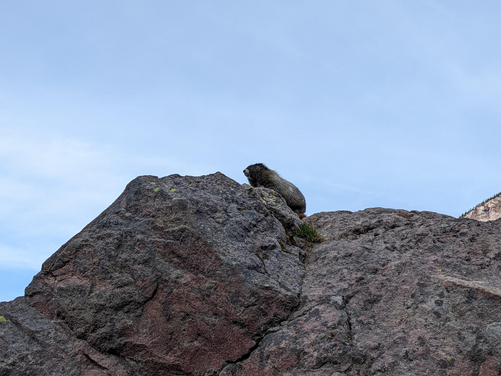

Marmot
This is a marmot. Marmots are closely related to squirrels. They are very furry and about the size of a cat.
They eat plants, bask on sunny rocks, and dig burrows to live in. They live on the mountain all year and hibernate when the ground is covered with snow.